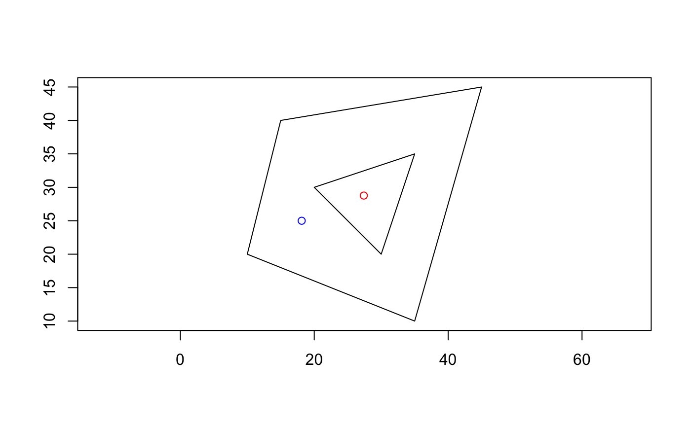
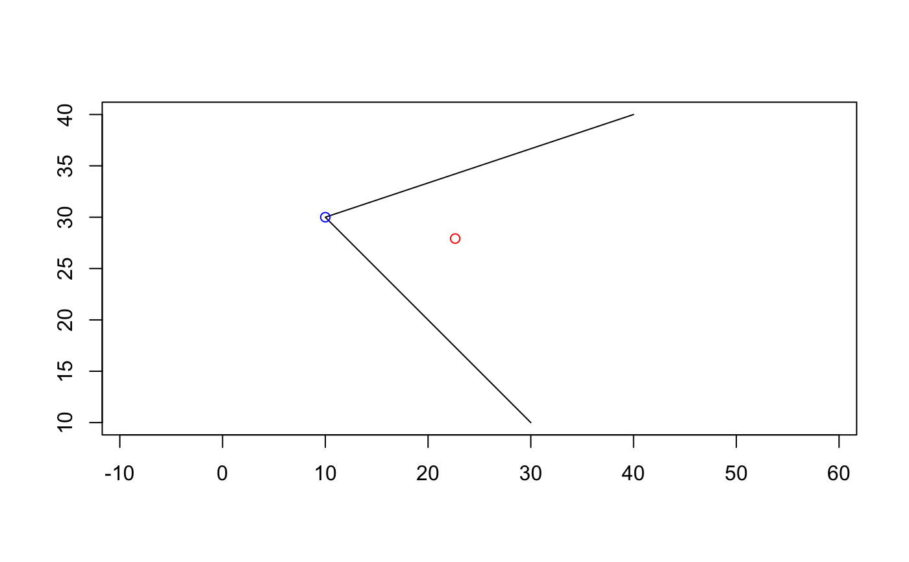
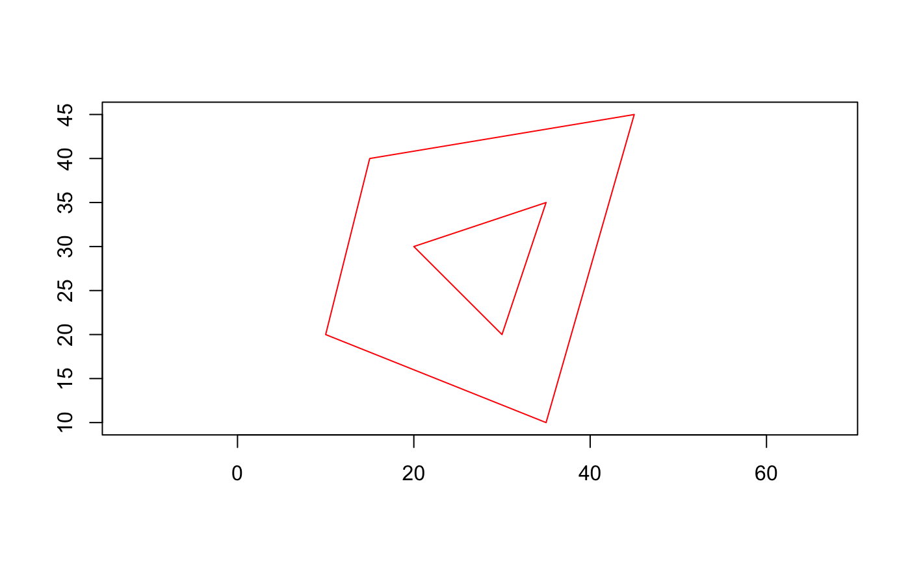
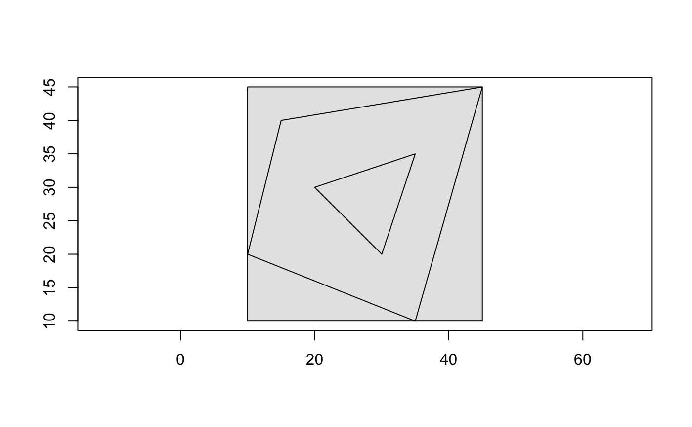
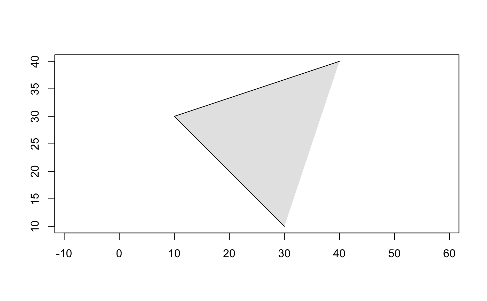
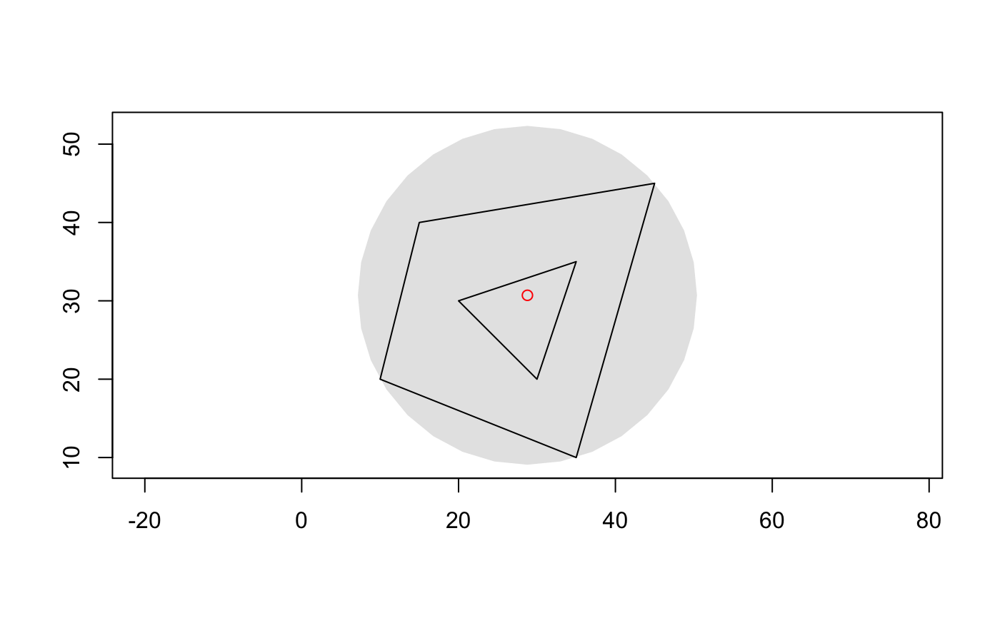
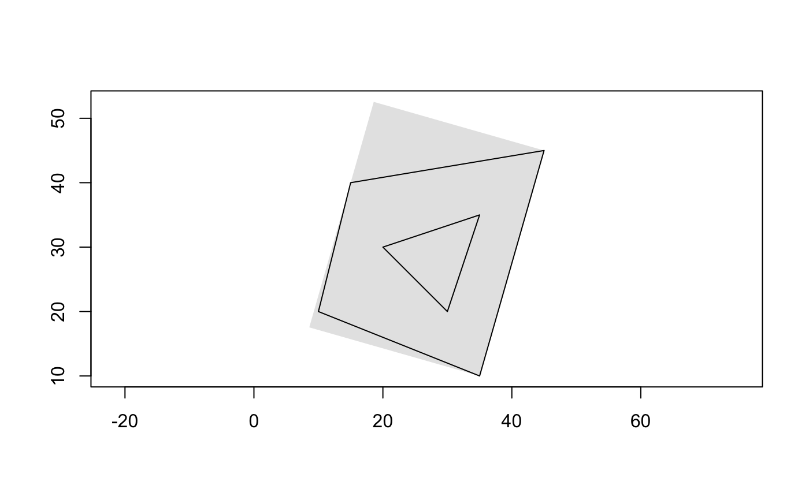
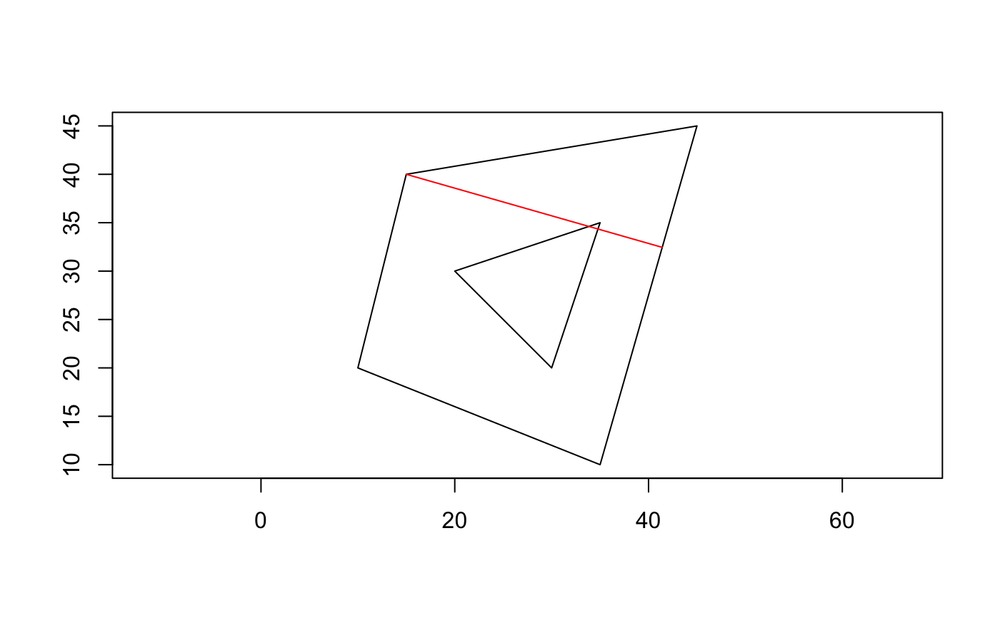
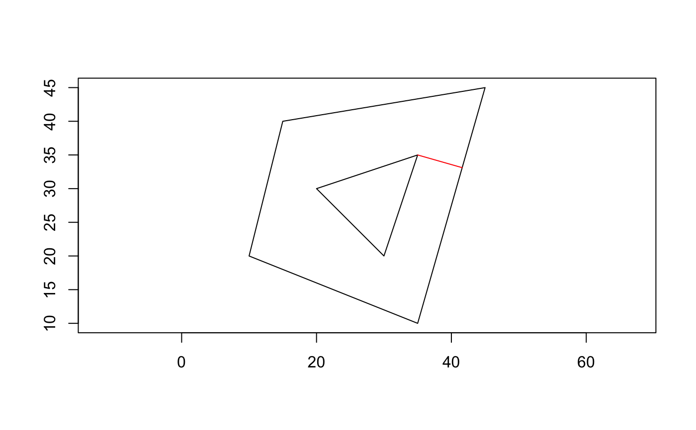

geos_centroid() returns the middle of the bounding box, regardless
of whether or not the point lies within the feature.
geos_point_on_surface() returns a point on the feature that is
guaranteed to be within the feature.
geos_node() "nodes" the input (linestring or polygon), removing duplicate
nodes that may exist in multiple features
geos_boundary() returns the boudnary of the feature. For a polygon,
this will be a linestring; for a linestring, this will be a multipoint.
geos_envelope() returns the bounding box of the feature as a
non-rotated rectangle as a polygon.
geos_convex_hull() returns the convex hull in the simplest form
possible, which may be a point or a linestring.
geos_minimum_rotated_rectangle() returns the smallest possible rectangle
that completely contains the x.
geos_minimum_bounding_circle() returns the smallest possible rectangle
that completely contains the x. The circle isn't particularly high
resolution, but you can construct it yourself using center and radius
provided by geos_minimum_bounding_circle_center() and
geos_minimum_bounding_circle_radius(), respectively.
geos_minimum_width() returns the smallest possible "hole" (as a linestring)
that the geometry can fit through with a single rotation. If the geometry is
the couch, the length of this line is that you would measure before trying
to squeeze it through a narrow hallway.
geos_minimum_clearance_line() the smallest internal "hole". Here the
geometry is the hallway, and this is the place you have to worry about
when moving your couch through it.
geos_minimum_clearance() the length of geos_minimum_clearance_line().
If the minimum width of your couch is larger than this value, do not try to
move your couch through this geometry.
geos_centroid(x, to = geo_ptype(x)) geos_point_on_surface(x, to = geo_ptype(x)) geos_node(x, to = geo_ptype(x)) geos_boundary(x, to = geo_ptype(x)) geos_envelope(x, to = geo_ptype(x)) geos_convex_hull(x, to = geo_ptype(x)) geos_minimum_rotated_rectangle(x, to = geo_ptype(x)) geos_minimum_bounding_circle(x, to = geo_ptype(x)) geos_minimum_bounding_circle_radius(x) geos_minimum_bounding_circle_center(x, to = geo_ptype(x)) geos_minimum_width(x, to = geo_ptype(x)) geos_minimum_clearance_line(x, to = geo_ptype(x)) geos_minimum_clearance(x)
| x | A geometry-like object |
|---|---|
| to | A prototype created by |
A geometry vector, except geos_minimum_clearance(), which
returns a numeric vector.
line <- geo_wkt("LINESTRING (30 10, 10 30, 40 40)") poly <- geo_wkt(" POLYGON ( (35 10, 45 45, 15 40, 10 20, 35 10), (20 30, 35 35, 30 20, 20 30) ) ") # centroid, point on surface for polygon geo_plot(poly)#> <geo_wkt[1]> #> [1] MULTILINESTRING ((0.0000000000000000 0.0000000000000000, 10.0000000000000000 10.0000000000000000))geo_plot_add(poly)geo_plot_add(line)if (geos_version() >= "3.8.0") { # minimum bounding circle (only with GEOS >= 3.8.0) geo_plot( geos_minimum_bounding_circle( poly ), col = "grey90", border = NA ) geo_plot_add(poly) geo_plot_add( geos_minimum_bounding_circle_center( poly ), col = "red" ) geos_minimum_bounding_circle_radius(poly) }#> [1] 21.61863if (geos_version() >= "3.6.1") { # minimum rotated rectangle geo_plot( geos_minimum_rotated_rectangle( poly ), col = "grey90", border = NA ) geo_plot_add(poly) # minimum width geo_plot(poly) geo_plot_add(geos_minimum_width(poly), col = "red") # minimum clearance line geo_plot(poly) geo_plot_add(geos_minimum_clearance_line(poly), col = "red") geos_minimum_clearance(poly) }#> [1] 6.868028